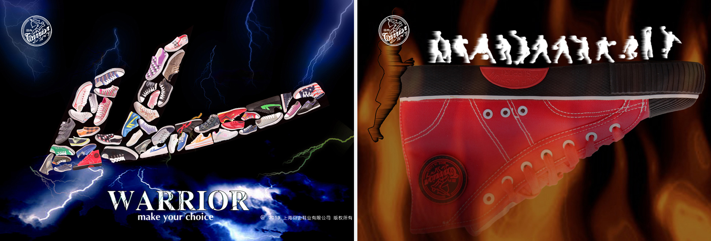

上海回力鞋业有限公司是由上海华谊（集团）公司全额投资的独立法人企业，专业从事回力牌运动鞋及各类鞋产品的研发、制造和销售，产品畅销全国，并出口东南亚、中东、欧美等几十个国家和地区。
回力鞋业创建于1927年，距今已有90年的历史。“回力”商标最早注册于1935年，1997年始被认定为上海市著名商标；1999年被认定为中国驰名商标。“回力”鞋类产品历获国家质量银质奖、化工部及上海市优质产品奖，连续数年获上海市名牌产品称号和上海市出口免检证书，并荣获第21届西班牙国际质量奖。企业通过了ISO9001：2008质量管理体系的认证。
回力鞋业立足“以人为本、崇尚运动、促进健康”的产品开发理念，以技术创新为核心，在积极开发普及型、大众化运动休闲鞋系列产品的同时，还着力研发具有较高技术含量的冷粘专业体育用鞋、户外健身运动鞋，努力为提高我国竞技体育及全民健身运动作贡献；还以品牌运作、技术管理的方式拓展了各种轻便注塑休闲鞋、雨鞋、凉鞋等系列产品。
近几年来，回力鞋业积极创新思路，在坚持回力体育品牌总定位的基础上，围绕“经典、时尚、专业”的品牌内涵主题，确立了“时尚运动、健康运动、专业运动”（分别针对青年、中老年和专业消费群体）的产品结构定位方向，不断开发出广受时尚青年和各类消费群体欢迎的中、高端回力产品。回力鞋业紧紧抓住2008年北京奥运会、2010年上海世博会等百年难得的历史机遇，大力弘扬民族品牌新的时尚风采；以转型求突破，以创新谋发展，在政府大力推进品牌战略的大背景下，回力鞋业的发展广受社会各界的关注和支持，回力品牌在市场上的影响力，达到了历史上最好水平。2010年公司销售额、利润总额同比分别增长50%、30%；2011年销售额、利润总额同比分别增长49%、66%，2012年销售额、利润总额同比分别增长70%、44%，连续三年取得历史性、突破性发展，实现“十二五”开门红。